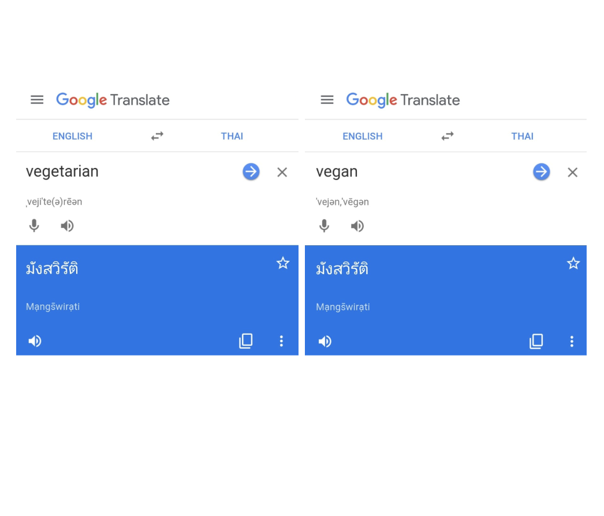

JustPoint is a free universal translator built by travelers for travelers. Using our app you can
easily
communicate
with anyone, irrespective of what language they speak.
Maybe you're in a foreign country craving a beer, or you want to ask how to get to the airport.
All you need to do is type the word or
concept you want
to communicate and we'll provide you with the perfect picture to get your point across.
Then, with the picture in hand, just point!
Explain the unexplainable
Direct word translations can help at times, but they can also be quite dangerous.
Concepts often get lost in translation, and there is no way to know that what you said
is the same as what the other person understood.
Translators such as Google Translate give a false sense of security to our communication
which can lead to serious misunderstandings and undesirable events. Additionally
they can only translate words, not concepts, and are designed to be a general-purpose
tool.
On the other hand, JustPoint is made specifically for travelers, aiming to make the
experience of
visiting a foreign country as smooth and stress-free as possible.

Features
Here's why users love JustPoint:
It's free.
This is the best way we can give back to the travelling community.
100% Offline
When travelling, it can be difficult to get access to the internet and there may be limits
to how much data you can use. Hence, it's essential that your translator is available
offline.
With JustPoint, when you donwload it once, you have everything you need and are ready to
head
out to the streets, wherever you are.
900+ pictures hand-picked by travelers
Searching for pictures online is one of the common ways that travelers get around these
days, but, besides the requirement for a reliable
internet connection,
the process can be more complicated than it seems. You need to open your browser,
search for a
word, scroll through multiple results, click on a picture, wait for it to load, and hope
that the picture is representative enough. With JustPoint, this process is faster and more
accurate.
All of our pictures have been hand-picked to represent each term in the best way
possible. In fact, over 150 pictures were designed by us
to ensure just that.
Try comparing Google Images results for "emergency" or "vegan" with our pics
and you'll see why
our pictures sure are worth a thousand words.
Drawing Board
Here's what one of our co-founders found out in his last trip to China: you should always
carry pen and paper with you.
In order to ensure you're taking the right bus, or to be able to ask someone for directions,
it is key to use Chinese characters.
But that requires carrying pen and paper at all times. Thus, JustPoint added a drawing
board. Using the board, you can let your
creativity flow and guide you around foreign land! You can write characters in the local
language, draw a word that we haven't added yet,
or just use it to have fun. With the drawing board, you're free to use it as you wish! Just
make sure you're being respectful.